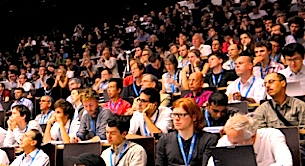
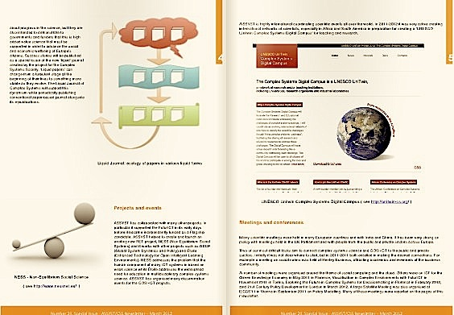
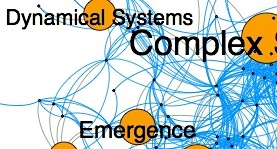

Complex Systems Society
Complex Systems SocietyWelcome to the Complex Systems Society
The Complex Systems Society was launched on the 7th December 2004 during the ECCS'04 European Conference on Complex Systems in Torino, Italy. Since then it has developed its activities aiming to promote all aspects of Complex Systems Science, as well as organizing the international scientific community of complex systems researchers.
Image above: ECCS'11, Vienna, 12-09-2011

Newsletter
March 2012

It had to arrive one day: ASSYST is near its end. After three years of many exciting initiatives, leading the organisation of a new scientific community, ASSYST will officially end this month. A special number of our newsletter, including closing remarks from some participants in our activities, is being prepared for the 15th of March. It will be published already in two weeks, stay attentive. Meanwhile, the present issue discusses...

Where are you in the CS community ?
We are pleased to announce the beta release of the CSS Online Community Explorer which maps interactively all CSS members.
By applying network tools to our community we intend to improve the visibility of CSS members towards peers and other stakeholders, and map the relevant subcommunities matching your interests.

CSS Digital Library
The CSS Digital Library provides a collection of documents, including videos, slides, articles and reports concerning events organized in the context of the Complex Systems Society, or by CSS members. Some of the recent collections available are:
- Workshop Aesthetics at the Heart of Science, FET'09, Prague, April 23, 2009
- ECCS'10 Plenary Talks, Lisbon, September 13-17, 2010
- "Young Researchers Session", ECCS'10, Lisbon, September 15, 2010
- 4th French Complex Systems Summer School 2010

CSS Wiki
- Announce an event
- Suggest news
- Create a webpage for an event or a project
- Register your record in the Who's Who
CSS Activities
News
Reports from ECCS11 Bursary Winners
2012-03-06
ASSYST provided 32 bursaries to people to attend ECCS’11. The bursaries provided limited contributions towards the conference fee and/or travel expenses for female scientists, young researchers, and others who would otherwise be unable to attend ...
Workshop on Mathematics for the Dynamics of Multilevel Systems
2012-03-06
The meeting Mathematics for the Dynamics of Multilevel Systems was held at the European Centre for Living Technology, Venice, 26th - 28th February 2012 ...

CSS Agenda - Events and Jobs
Collective Intelligence 2012
18 Apr 2012 - 20 Apr 2012
17th IEEE International Conference on Engineering of Complex Computer Systems
18 Jul 2012 - 20 Jul 2012
ECCS'12 - European Conference on Complex Systems
3 Sep 2012 - 7 Sep 2012